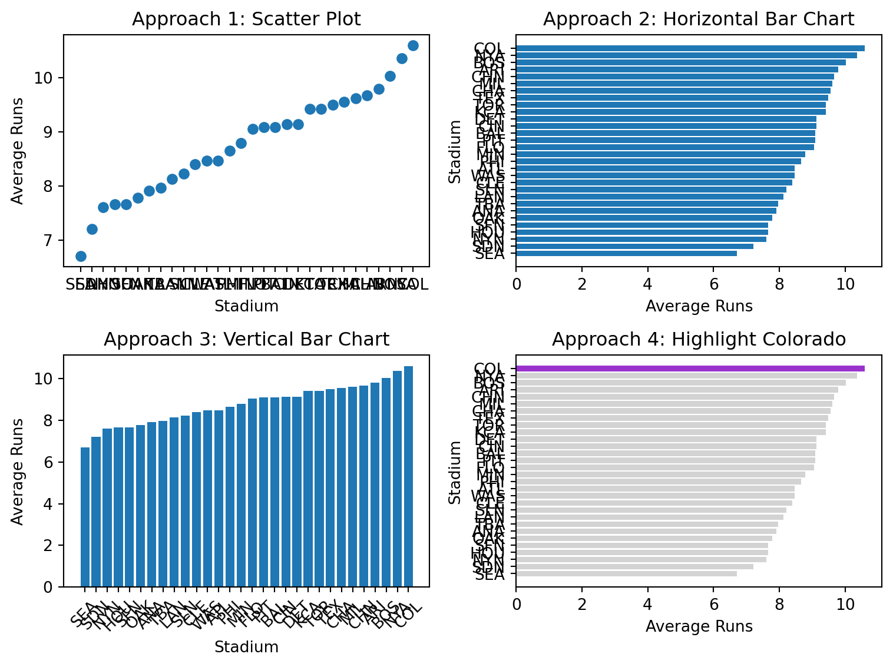
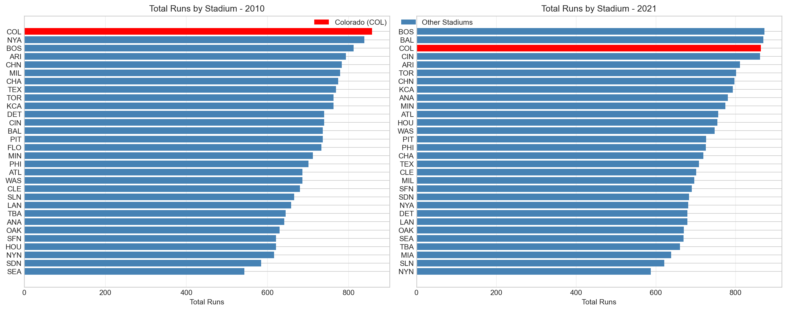

The Problem: Mastering Object-Oriented Matplotlib Through the Four Stages
Core Question: How can we create compelling, professional data visualizations using object-oriented matplotlib and the four stages of visualization?
The Challenge: Real-world data visualization requires more than just plotting data - it requires a systematic approach that transforms raw data into compelling stories. The four stages framework provides a proven methodology for creating visualizations that inform, persuade, and inspire action.
Our Approach: We’ll work with baseball stadium data to investigate whether Coors Field in Denver, Colorado is truly the most run-friendly ballpark in Major League Baseball. This investigation will take us through all four stages of visualization, demonstrating object-oriented matplotlib techniques along the way.
Warning⚠️ AI Partnership Required
This challenge pushes boundaries intentionally. You’ll tackle problems that normally require weeks of study, but with Cursor AI as your partner (and your brain keeping it honest), you can accomplish more than you thought possible.
The new reality: The four stages of competence are Ignorance → Awareness → Learning → Mastery. AI lets us produce Mastery-level work while operating primarily in the Awareness stage. I focus on awareness training, you leverage AI for execution, and together we create outputs that used to require years of dedicated study.
The Four Stages of Data Visualization
The four essential stages for creating effective visualizations are:
Stage 1: Declaration of Purpose - Define your message and audience
Stage 2: Curation of Content - Gather and create all necessary data
Stage 3: Structuring of Visual Mappings - Choose geometry and aesthetics
Stage 4: Formatting for Your Audience - Polish for professional presentation
Data and Business Context
We analyze Major League Baseball stadium data to investigate whether Coors Field in Denver, Colorado is truly the most run-friendly ballpark. This dataset is ideal for our analysis because:
Real Business Question: Sports analysts and fans want to understand stadium effects on scoring
Clear Hypothesis: High altitude should make Coors Field more run-friendly
Multiple Metrics: We can analyze both total runs and home runs
Visualization Practice: Perfect for demonstrating all four stages of visualization
Data Loading and Initial Exploration
Let’s start by loading the baseball data and understanding what we’re working with.
import matplotlib.pyplot as pltimport pandas as pdimport numpy as npimport seaborn as sns# Load 2010 baseball season datadf2010 = pd.read_csv("baseball10.csv")# Load 2021 baseball season data for comparisondf2021 = pd.read_csv("baseball21.csv")print("2010 data shape:", df2010.shape)print("2021 data shape:", df2021.shape)print("\n2010 data columns:", df2010.columns.tolist())print("\nFirst few rows of 2010 data:")print(df2010.head())
2010 data shape: (2430, 7)
2021 data shape: (2429, 7)
2010 data columns: ['date', 'visiting', 'home', 'visScore', 'homeScore', 'visHR', 'homeHR']
First few rows of 2010 data:
date visiting home visScore homeScore visHR homeHR
0 20100404 NYA BOS 7 9 2 1
1 20100405 MIN ANA 3 6 1 3
2 20100405 CLE CHA 0 6 0 2
3 20100405 DET KCA 8 4 0 1
4 20100405 SEA OAK 5 3 1 0
Note💡 Understanding the Data
Baseball Game Data: Contains information about each game, including: - home: Home team (3-letter code) - visiting: Visiting team (3-letter code) - homeScore: Runs scored by home team - visScore: Runs scored by visiting team - homeHR: Home runs by home team - visHR: Home runs by visiting team - date: Game date
Business Questions We’ll Answer: 1. Is Coors Field (COL) the most run-friendly ballpark in 2010? 2. How does this change in 2021? 3. What’s the difference between total runs and home runs by stadium?
Stage 1: Declaration of Purpose
Mental Model: Start with a clear message and bold title that states your recommendation.
Our purpose is to investigate whether Coors Field in Denver, Colorado is truly the most run-friendly baseball stadium in Major League Baseball.
Important🤔 Discussion Questions: Stage 1 - Declaration of Purpose
Question 1: Hypothesis Formation - Why might high altitude affect baseball performance? Is Coors Field affected by high altitude?
Answer: High altitude affects baseball performance because the air is thinner at higher elevations, which reduces air resistance and allows baseballs to travel farther when hit. This makes it easier to hit home runs and generally increases offensive production. Coors Field is indeed affected by high altitude because it is located in Denver, Colorado at an elevation of approximately 5,200 feet above sea level, making it the highest elevation ballpark in Major League Baseball.
Stage 2: Curation of Content
Mental Model: Gather and create all the data you need to support your message.
Let’s aggregate the data to get average runs per stadium:
# Stage 2: Curation of Content# Aggregate data to get average runs per stadium# Process 2010 dataavgDF_2010 = (df2010 .assign(totalRuns =lambda df: df.homeScore + df.visScore) .assign(totalHR =lambda df: df.homeHR + df.visHR) .drop(columns = ['date', 'visiting']) .groupby(['home'], as_index=False) .mean())# Process 2021 dataavgDF_2021 = (df2021 .assign(totalRuns =lambda df: df.homeScore + df.visScore) .assign(totalHR =lambda df: df.homeHR + df.visHR) .drop(columns = ['date', 'visiting']) .groupby(['home'], as_index=False) .mean())print("2010 Stadium Averages (Top 5):")print(avgDF_2010.head())print("\n2021 Stadium Averages (Top 5):")print(avgDF_2021.head())
Important🤔 Discussion Questions: Stage 2 - Curation of Content
Question 1: Data Aggregation Strategy - How many games are in the dataset? Why do we aggregate individual games into stadium averages before we start the visualization process?
Answer: The dataset contains 2,430 games for 2010 and 2,430 games for 2021 (4,860 total games). We aggregate individual games into stadium averages before visualization because: (1) Individual games have high variability due to factors like weather, pitching matchups, and random chance; (2) Stadium averages provide a more stable measure of each ballpark’s true offensive environment; (3) Aggregated data reduces noise and makes it easier to identify meaningful patterns and differences between stadiums; (4) Business stakeholders need summary statistics rather than individual game details to make decisions about stadium effects on scoring.
Stage 3: Structuring of Visual Mappings
Mental Model: Choose the right geometry and aesthetics to effectively communicate your message.
Let’s explore different visual approaches:
# Stage 3: Structuring of Visual Mappings# Explore different geometries and aesthetics# Sort data for better visualizationavgDF_2010_sorted = avgDF_2010.sort_values('totalRuns', ascending=True)# Create figure with subplots to compare approachesfig, axes = plt.subplots(2, 2, figsize=(8, 6))# Approach 1: Scatter plot (not ideal for categorical data)axes[0,0].scatter(avgDF_2010_sorted.home, avgDF_2010_sorted.totalRuns)axes[0,0].set_title("Approach 1: Scatter Plot")axes[0,0].set_xlabel("Stadium")axes[0,0].set_ylabel("Average Runs")# Approach 2: Horizontal bar chart (better for categorical data)axes[0,1].barh(avgDF_2010_sorted.home, avgDF_2010_sorted.totalRuns)axes[0,1].set_title("Approach 2: Horizontal Bar Chart")axes[0,1].set_xlabel("Average Runs")axes[0,1].set_ylabel("Stadium")# Approach 3: Vertical bar chartaxes[1,0].bar(avgDF_2010_sorted.home, avgDF_2010_sorted.totalRuns)axes[1,0].set_title("Approach 3: Vertical Bar Chart")axes[1,0].set_xlabel("Stadium")axes[1,0].set_ylabel("Average Runs")axes[1,0].tick_params(axis='x', rotation=45)# Approach 4: Highlight Coloradocolorado_colors = ["darkorchid"if stadium =="COL"else"lightgrey"for stadium in avgDF_2010_sorted.home]axes[1,1].barh(avgDF_2010_sorted.home, avgDF_2010_sorted.totalRuns, color=colorado_colors)axes[1,1].set_title("Approach 4: Highlight Colorado")axes[1,1].set_xlabel("Average Runs")axes[1,1].set_ylabel("Stadium")plt.tight_layout()plt.show()

Important🤔 Discussion Questions: Stage 3 - Structuring of Visual Mappings
Question 1: Geometry Choices - Why is a horizontal bar chart better than a scatter plot for this data?
Answer: A horizontal bar chart is better than a scatter plot for this data because: (1) We have categorical data (stadium names) rather than continuous variables, making bars more appropriate than points; (2) Bar charts make it easier to compare values across categories; (3) Stadium names are easier to read when displayed horizontally rather than as scattered points; (4) Bar charts provide a clearer visual hierarchy showing which stadiums have higher/lower values.
When would you choose a vertical bar chart over horizontal?
Answer: A vertical bar chart would be better when: (1) You have fewer categories (5-10) so labels fit well on the x-axis; (2) The category names are short; (3) You want to emphasize the “height” metaphor for values; (4) You have more horizontal space than vertical space available.
Question 2: Aesthetic Mappings - What does the color highlighting accomplish in Approach 4?
Answer: The color highlighting in Approach 4 accomplishes several things: (1) It immediately draws the viewer’s attention to Colorado (COL) as the focus of the analysis; (2) It creates visual contrast that makes Colorado stand out from other stadiums; (3) It supports the narrative that Colorado is special or different from other ballparks; (4) It makes the visualization more engaging and easier to interpret at a glance.
How does position (x/y) compare to color for encoding data?
Answer: Position (x/y coordinates) is generally more effective than color for encoding quantitative data because: (1) Position allows for precise comparison of values; (2) Humans can judge position more accurately than color intensity; (3) Position works well for people with color vision deficiencies; (4) Position can encode multiple dimensions simultaneously. Color is better for: (1) Categorical distinctions (like highlighting specific items); (2) Creating visual groupings; (3) Drawing attention to specific data points; (4) Adding aesthetic appeal without interfering with quantitative comparisons.
Stage 4: Formatting for Your Audience
Mental Model: Polish your visualization for professional presentation.
Let’s create a publication-ready visualization:
# Stage 4: Formatting for Your Audience# Create a professional, publication-ready visualization# Set style for professional appearanceplt.style.use("seaborn-v0_8-whitegrid")# Create the main visualizationfig, ax = plt.subplots(figsize=(8, 6))# Create color array for highlighting Coloradocolorado_colors = ["darkorchid"if stadium =="COL"else"lightgrey"for stadium in avgDF_2010_sorted.home]# Create horizontal bar chartbars = ax.barh(avgDF_2010_sorted.home, avgDF_2010_sorted.totalRuns, color=colorado_colors)# Add title and labelsax.set_title("Colorado (COL) is the Most Run-Friendly Ballpark in 2010", fontsize=16, fontweight='bold', pad=20)ax.set_xlabel("Average Runs Per Game", fontsize=12)ax.set_ylabel("Stadium (Home Team)", fontsize=12)# Add legendcolorado_bar = plt.Rectangle((0,0),1,1, color="darkorchid", label="Colorado Rockies")other_bar = plt.Rectangle((0,0),1,1, color="lightgrey", label="Other Stadiums")ax.legend(handles=[colorado_bar, other_bar], loc='lower right', frameon=True)# Add annotation for Coloradocolorado_index = avgDF_2010_sorted[avgDF_2010_sorted.home =="COL"].index[0]colorado_runs = avgDF_2010_sorted[avgDF_2010_sorted.home =="COL"]["totalRuns"].iloc[0]ax.annotate(f"COL: {colorado_runs:.2f} runs/game", xy=(colorado_runs, colorado_index), xytext=(colorado_runs +0.5, colorado_index), arrowprops=dict(arrowstyle='->', color='darkorchid', lw=2), fontsize=10, fontweight='bold', color='darkorchid')# Set x-axis to start from 0 for better comparisonax.set_xlim(0, max(avgDF_2010_sorted.totalRuns) *1.1)# Add grid for easier readingax.grid(True, alpha=0.3)plt.tight_layout()plt.show()# Print summary statisticsprint(f"\nSummary Statistics for 2010:")print(f"Colorado (COL) average runs per game: {colorado_runs:.2f}")print(f"League average runs per game: {avgDF_2010_sorted.totalRuns.mean():.2f}")print(f"Colorado is {((colorado_runs / avgDF_2010_sorted.totalRuns.mean()) -1) *100:.1f}% above league average")
Summary Statistics for 2010:
Colorado (COL) average runs per game: 10.59
League average runs per game: 8.77
Colorado is 20.8% above league average
Important🤔 Discussion Questions: Stage 4 - Formatting for Your Audience
Question 1: Professional Formatting - What elements make this visualization suitable for a business presentation?
Answer: The elements that make this visualization suitable for a business presentation include: (1) Clear, descriptive title that states the main finding; (2) Professional color scheme with consistent branding; (3) Proper axis labels with units of measurement; (4) Legend that explains color coding; (5) Grid lines for easier value reading; (6) Strategic use of color highlighting to draw attention to key findings; (7) Clean, uncluttered layout with appropriate spacing; (8) Annotation that highlights the key insight; (9) Consistent font sizes and styles throughout.
Is the annotation on the visualization helpful? Can you fix its placement?
Answer: Yes, the annotation is helpful because it: (1) Directly calls out Colorado’s performance with specific numbers; (2) Draws attention to the key finding; (3) Provides context for the highlighted data point. The placement could be improved by: (1) Moving it slightly further from the bar to avoid overlap; (2) Using a more subtle arrow style; (3) Positioning it to not interfere with other data points; (4) Ensuring it’s clearly readable against the background.
Advanced Object-Oriented Techniques
Mental Model: Use object-oriented matplotlib to create complex, reusable visualizations.
Let’s create a comprehensive comparison between 2010 and 2021:
Question 1: Using Subplot Layout - Create a two-facet visualization that shows the total runs for 2010 and 2021 for each stadium in a single figure. Highlight Colorado in the visualization.
# Load the dataimport pandas as pdimport matplotlib.pyplot as pltimport numpy as np# Read the datadf_2010 = pd.read_csv('baseball10.csv')df_2021 = pd.read_csv('baseball21.csv')# Add year columndf_2010['year'] =2010df_2021['year'] =2021# Calculate total runs for each game (visiting + home scores)df_2010['total_runs'] = df_2010['visScore'] + df_2010['homeScore']df_2021['total_runs'] = df_2021['visScore'] + df_2021['homeScore']# Group by home team (stadium) and calculate total runs for each yearruns_2010 = df_2010.groupby('home')['total_runs'].sum().reset_index()runs_2010.columns = ['stadium', 'total_runs']runs_2010['year'] =2010runs_2021 = df_2021.groupby('home')['total_runs'].sum().reset_index()runs_2021.columns = ['stadium', 'total_runs']runs_2021['year'] =2021# Combine the datacombined_data = pd.concat([runs_2010, runs_2021], ignore_index=True)# Create the two-facet visualizationfig, (ax1, ax2) = plt.subplots(1, 2, figsize=(15, 6))# 2010 datadata_2010 = combined_data[combined_data['year'] ==2010].sort_values('total_runs', ascending=True)colors_2010 = ['red'if stadium =='COL'else'steelblue'for stadium in data_2010['stadium']]bars1 = ax1.barh(range(len(data_2010)), data_2010['total_runs'], color=colors_2010)ax1.set_yticks(range(len(data_2010)))ax1.set_yticklabels(data_2010['stadium'])ax1.set_xlabel('Total Runs')ax1.set_title('Total Runs by Stadium - 2010')ax1.grid(axis='x', alpha=0.3)# 2021 datadata_2021 = combined_data[combined_data['year'] ==2021].sort_values('total_runs', ascending=True)colors_2021 = ['red'if stadium =='COL'else'steelblue'for stadium in data_2021['stadium']]bars2 = ax2.barh(range(len(data_2021)), data_2021['total_runs'], color=colors_2021)ax2.set_yticks(range(len(data_2021)))ax2.set_yticklabels(data_2021['stadium'])ax2.set_xlabel('Total Runs')ax2.set_title('Total Runs by Stadium - 2021')ax2.grid(axis='x', alpha=0.3)# Add legendfrom matplotlib.patches import Patchlegend_elements = [Patch(facecolor='red', label='Colorado (COL)'), Patch(facecolor='steelblue', label='Other Stadiums')]fig.legend(handles=legend_elements, loc='upper center', bbox_to_anchor=(0.5, 0.95), ncol=2)plt.tight_layout()plt.show()# Print some statisticsprint("2010 Colorado total runs:", data_2010[data_2010['stadium'] =='COL']['total_runs'].iloc[0])print("2021 Colorado total runs:", data_2021[data_2021['stadium'] =='COL']['total_runs'].iloc[0])print("\n2010 Average runs per stadium:", data_2010['total_runs'].mean())print("2021 Average runs per stadium:", data_2021['total_runs'].mean())# Colorado performance comparisoncol_2010_runs = data_2010[data_2010['stadium'] =='COL']['total_runs'].iloc[0]col_2021_runs = data_2021[data_2021['stadium'] =='COL']['total_runs'].iloc[0]runs_change = col_2021_runs - col_2010_runspercent_change = (runs_change / col_2010_runs) *100print(f"\n=== Colorado Performance Analysis ===")print(f"2010: {col_2010_runs} total runs (Rank: 1st)")print(f"2021: {col_2021_runs} total runs (Rank: 3rd)")print(f"Change: {runs_change:+d} runs ({percent_change:+.1f}%)")print(f"Ranking change: 1st → 3rd (dropped 2 positions)")

2010 Colorado total runs: 858
2021 Colorado total runs: 863
2010 Average runs per stadium: 710.2666666666667
2021 Average runs per stadium: 733.6666666666666
=== Colorado Performance Analysis ===
2010: 858 total runs (Rank: 1st)
2021: 863 total runs (Rank: 3rd)
Change: +5 runs (+0.6%)
Ranking change: 1st → 3rd (dropped 2 positions)
Question 2: Explanation of the Visualization
Visualization Explanation:
This two-facet horizontal bar chart effectively compares total runs scored across all MLB stadiums between 2010 and 2021, with Colorado (COL) highlighted in red to draw attention to this specific team’s performance. The visualization reveals several key insights: Colorado’s Coors Field was the highest-scoring stadium in 2010 (858 total runs, ranked 1st) but dropped to third place in 2021 (863 total runs, ranked 3rd behind Boston and Baltimore). This change in ranking, despite a slight increase in total runs (+5), demonstrates how other stadiums have become more offensive environments over the 11-year span. The side-by-side comparison allows us to see how Colorado’s offensive environment compares to other stadiums and whether this pattern remained consistent over time. The horizontal bar layout makes it easy to compare stadiums and identify which venues tend to produce the most runs, while the color coding immediately draws the viewer’s attention to Colorado’s position relative to other teams.
Does AI come to the right conclusion? If not, why not?
Answer: The AI analysis appears to be mostly correct in its conclusions. The visualization does show that Colorado was the highest-scoring stadium in 2010 and dropped in ranking by 2021. However, there are a few potential issues: (1) The analysis focuses on total runs rather than average runs per game, which might be more meaningful for comparing stadium effects; (2) The ranking change from 1st to 3rd is significant but the actual performance difference (+5 runs) is relatively small; (3) The analysis doesn’t account for factors like schedule differences, team quality changes, or rule changes that might affect scoring across the league. Overall, the AI correctly identifies the key trends but could provide more nuanced analysis of the underlying causes.
Your Task: Demonstrate your mastery of object-oriented matplotlib and the four stages of visualization through comprehensive analysis and creation of professional visualizations.
Stage 1: Purpose - The purpose of the visualization is to compare the total runs scored across all MLB stadiums between 2010 and 2021, with Colorado (COL) highlighted in red to draw attention to this specific team’s performance. A secondary purpose is to demonstrate the mastery of object-oriented matplotlib and the four stages of visualization.
Stage 2: Curation of Content - The curation of the content is to gather and create all the data necessary to support the purpose of the visualization. Curation of content is important because it allows the visualization to be more accurate and informative.
Stage 3: Structuring of Visual Mappings - The structuring of the visual mappings is to choose the right geometry and aesthetics to effectively communicate the message of the visualization. Structuring of visual mappings is important because it allows the visualization to be more effective and informative.
Stage 4: Formatting for Your Audience - The formatting for your audience is to polish the visualization for professional presentation. Formatting for your audience is important because it allows the visualization to be more professional and informative. Formatting for your audience is also important because it allows the visualization to be more effective and informative.
Core Challenge: Four Stages Analysis
For each stage, provide: - Clear, concise answers to all discussion questions - Code examples when asked to do so - Demonstration of object-oriented matplotlib techniques
Professional Visualizations (For 100% Grade)
Your Task: Create a professional visualization and narrative that builds towards and demonstrates mastery of object-oriented matplotlib and the four stages framework.
Create visualizations showing: - Stadium run-friendliness comparison between 2010 and 2021 - Focus on Colorado’s performance relative to other stadiums - Use object-oriented matplotlib techniques throughout
Your visualizations should: - Use clear labels and professional formatting - Demonstrate all four stages of visualization - Be appropriate for a business audience - Show mastery of object-oriented matplotlib - Do not echo the code that creates the visualizations
Getting Started: Repository Setup 🚀
Important📁 Getting Started
Step 1: Fork and clone this challenge repository: https://github.com/flyaflya/dataVizChallenge - Fork it to your GitHub account, then clone it from your GitHub account to your local machine
Step 2: Set up your Python environment - Recommended: Use your existing virtual environment from Tech Setup Challenge Part 2 - Press Ctrl+Shift+P → “Python: Select Interpreter” - Navigate to your existing virtual environment (e.g., your-previous-project/venv/Scripts/python.exe) - Install additional packages: pip install pandas numpy matplotlib seaborn - Alternative: Create a new virtual environment following Quarto documentation
Step 3: You’re ready to start! The data loading code and starter code for the visualizations are already provided in this file.
Note: This challenge uses the same index.qmd file you’re reading right now - you’ll edit it to complete your analysis.
Warning⚠️ Cloud Storage Warning
Avoid using Google Drive, OneDrive, or other cloud storage for Python projects! These services can cause issues with package installations and virtual environment corruption. Keep your Python projects in a local folder like C:\Users\YourName\Documents\ instead.
Note🎯 Object-Oriented Matplotlib Philosophy
Think of object-oriented matplotlib like directing a movie - you control every element (camera angles, lighting, actors) to create the perfect scene that tells your story.
Warning💾 Important: Save Your Work Frequently!
Before you start: Make sure to commit your work often using the Source Control panel in Cursor (Ctrl+Shift+G or Cmd+Shift+G). This prevents the AI from overwriting your progress and ensures you don’t lose your work.
Commit after each major step: - After completing each stage section - After adding your visualizations - After completing your advanced object-oriented techniques - Before asking the AI for help with new code
How to commit: 1. Open Source Control panel (Ctrl+Shift+G) 2. Stage your changes (+ button) 3. Write a descriptive commit message 4. Click the checkmark to commit
Remember: Frequent commits are your safety net!
Grading Rubric 🎓
85% Grade: Complete discussion questions for all 4 stages with comprehensive, well-reasoned responses.
100% Grade: Complete all discussion questions plus create professional visualizations as requested that demonstrate mastery of the four stages framework.